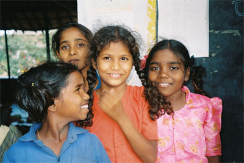

Der Topf mit dem süßen, milchigen Chai dampft. Das Nationalgetränk Indiens wird – wie alle Speisen – traditionell über offenem Feuer gekocht. Dessen Rauch führt allerdings nicht selten zu chronischen Atemwegserkrankungen der Frauen. Und auch die Umwelt wird durch das unkontrollierte Roden von Wald zunehmend angegriffen. Die nachhaltigere Alternative: ein mit Pflanzenöl betriebener Kocher. „Wälder bleiben so verschont, und für die Gesundheit schädliche Gase entstehen erst gar nicht“, erklärt Dr. Fritz Brickwedde, Generalsekretär der Deutschen Bundesstiftung Umwelt (DBU). terre des hommes Deutschland führt im Rahmen eines Bildungsprogramms zu Nachhaltigkeit den für Entwicklungsländer konzipierten Kocher nun im indischen Bundesstaat Andhra Pradesh ein. Die DBU fördert das Vorhaben mit 125.000 Euro. „Ein gelungenes Beispiel, wie Umweltschutz und Entwicklungsarbeit wirkungsvoll verbunden werden können“, sagt Danuta Sacher, Geschäftsführerin von terre des hommes Deutschland, die die Förderbewilligung heute von Brickwedde entgegennahm.
Die Niederschlagsmengen sind gering, der Boden ist übernutzt, und Wälder werden zur Beschaffung von Feuerholz unkontrolliert gerodet. Das Ökosystem des im Südosten Indiens liegenden Bundesstaats Andhra Pradesh ist fast vollständig zerstört. 70 Prozent der dort ansässigen Einwohner leben von der Landwirtschaft, davon 34 Prozent unterhalb der Armutsgrenze. Die Böden sind nicht mehr ertragreich, Ernten bleiben häufig aus. Und viele Bauern haben aufgrund des mangelnden Oberflächenwassers große Verluste ihres Viehbestands zu beklagen. Das Problem ist: Ein Umweltbewusstsein über ökologische Wechselwirkungen ist angesichts solch existenzieller Fragen wenig ausgeprägt. Es fehlt der Bevölkerung an Bildung und Wissen. Aus diesem Grund plant das entwicklungspolitische Kinderhilfswerk terre des hommes, im Rahmen eines Umweltbildungsprogramms in 14 Dörfern unterschiedliche ineinander greifende Maßnahmen durchzuführen und damit die Grundlage für bessere Lebensbedingungen in dem fünftgrößten Bundesstaat Indiens zu schaffen. „Um Armut zu überwinden, ist der Gedanke der Nachhaltigkeit, also natürliche Rohstoffe schonend zu verwenden und heute nicht auf Kosten künftiger Generationen zu leben, von zentraler Bedeutung“, betont Brickwedde.
Eine der Maßnahmen des Bildungsprogramms ist die Einführung von Protos – einem Pflanzenölkocher, der mit finanzieller Unterstützung der DBU von der Universität Hohenheim speziell für Entwicklungsländer gebaut wurde und dessen Produktion die BSH Bosch und Siemens Hausgeräte GmbH (BSH) übernommen hat. „Damit möchten wir erreichen, dass für die Zubereitung von Speisen kein knappes Brennholz mehr verfeuert wird“, erläutert Sacher. So könne der Bodenerosion, aber auch Naturkatastrophen, die in Folge des Abholzens in Entwicklungsländern immer häufiger auftreten, langfristig entgegen gewirkt werden. Darüber hinaus werde die Schadstoffbelastung der Umwelt verringert, da Pflanzenöle eingesetzt werden könnten und im Gegensatz zu fossilen Brennstoffen wie Öl oder Gas eine Tonne Kohlendioxid pro Kocher und Jahr eingespart werden könne. „Gesünder ist der Einsatz des Kochers auch«, so Sacher. »Denn der Rauch, der bei der traditionellen Art, auf offenen Feuerstellen zu kochen, entsteht, führt vor allem bei Mädchen und Frauen leicht zu chronischen Atemwegserkrankungen.“
Ein erstes Training zum richtigen Umgang mit dem Gerät ist bereits in Andhra Pradesh erfolgt. »Bevor wir die Kocher unter das Volk bringen, wollten wir sie auf ihre Alltagstauglichkeit hin testen. Erfreulicherweise haben wir festgestellt, dass die Reaktionen bei unseren Partnern sehr positiv waren«, schildert Sacher. Es sei daher davon auszugehen, dass die Protos-Geräte recht bald zum Einsatz kommen können. „In Einführungskursen unserer Projektpartner vor Ort wird nun der richtige Umgang mit dem Kocher geübt. Gleichzeitig klären die Mitarbeiter die Dorfbewohner über Zusammenhänge von Gesundheits- und Umweltrisiken sowie Hygieneverhalten und Wassernutzung auf.“ Darüber hinaus sollen Einkommensmöglichkeiten in Zusammenhang mit dem Kocher erschlossen werden – angefangen von Einnahmen durch die Pflanzenölproduktion bis zum Verkauf der zubereiteten Produkte. „Unser langfristiges Ziel ist es, einen eigenständigen Wirtschaftskreislauf zu etablieren“, so Sacher.
Eingebettet ist die Einführung des Pflanzenölkochers in ein umfassendes Bildungsprogramm zum nachhaltigeren Umgang mit natürlichen Quellen und Rohstoffen. Hier sei unter anderem geplant, 30 Umweltgruppen zu gründen, in denen sich Kinder und Jugendliche gemeinsam mit Pädagogen das Thema Umweltschutz erarbeiten. In einer weiteren Maßnahme soll der Verband zur Vertretung der Kleinbauern in Andhra Pradesh gestärkt sowie verödetes Gemeindeland wieder fruchtbar gemacht werden. „Hier können wir auf das Wissen aus einem vorangegangen Projekt zur umweltgerechteren Landnutzung zurückgreifen, das wir zwischen 2006 und 2008 in dem gleichen Bundesstaat erfolgreich durchgeführt haben“, sagt Sacher. In dem ebenfalls von der DBU geförderten Vorhaben wurden in 16 Gemeinden insgesamt 5.000 Hektar ehemaliges Brachland wieder aufgeforstet und sowohl das Wachstum der Pflanzen als auch die Bodenbeschaffenheit verbessert. Die Bauern hätten so ihre Agrarproduktion enorm steigern können. „Ein Teil der damals geförderten Gemeinden wird auch in das aktuelle Vorhaben einbezogen, damit sie als Multiplikatoren in der Region wirken“, erklärt Sacher. „Positive Ergebnisse werden so auf andere Kommunen übertragen, und wir können uns langfristig gesehen aus den Projekten Stück für Stück zurückziehen.“
„Umwelt- und Entwicklungspolitik eng zu verzahnen, hat sich bereits beim Vorgängerprojekt als richtiger Ansatz erwiesen und lässt auf positive Ergebnisse in dem jetzt anlaufenden Umweltbildungsprogramm zur nachhaltigen Entwicklung hoffen“, erläutert Brickwedde anlässlich der Bewilligungsübergabe. Auch Klaus Töpfer, ehemaliger Umweltminister und Direktor des Umweltprogramms der Vereinten Nationen (United Nations, UN), spricht sich seit Jahren dafür aus, dass Armut nicht ohne Umwelt- und Ressourcenschutz überwunden werden kann. Erst kürzlich betonte der Träger des von der DBU ausgelobten Deutschen Umweltpreises in einem Interview: „Die Stabilität der Meere und des Klimas, der Verlust an Artenvielfalt, die Zerstörung von Böden und der Wassermangel auf der Welt sind heute keine Elitenprobleme mehr, von denen die meisten Menschen denken, es ginge sie nichts an.“ Ganz im Gegenteil: „Vor allem die Bevölkerung in den Entwicklungsländern leidet unter den globalen Klimaveränderungen, denn sie ist den damit verbundenen Risiken wie Krankheit, Hunger oder Ernteverlust besonders stark ausgesetzt“, erklärt Brickwedde. Doch um überleben zu können, sei sie nicht selten dazu gezwungen, die eigenen natürlichen Quellen zu stark zu nutzen. „Diesen Teufelskreis gilt es mit Projekten wie dem von terre des hommes zu durchbrechen“, so der DBU-Generalsekretär.
Pressemappe inkl. Fotos |


;)